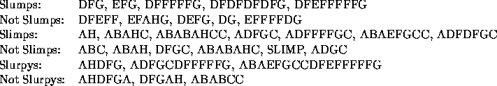

| Slurpys |
Recognizing strings based on a set of restrictions is a common computational problem.
A Slurpy is a string of characters that has certain properties. Your program will read in strings of characters and output whether or not they are Slurpys.
A Slump is a character string that has the following properties:
A Slimp is a character string that has the following properties:
A Slurpy is a character string that consists of a Slimp followed by a Slump.

The first line contains an integer N between 1 and 10 describing how many strings of characters are represented. The next N lines each contain a string of 1 to 60 alpha characters.
The first line of output should read SLURPYS OUTPUT. Each of the next N lines of output should consist of either YES or NO depending on whether or not the corresponding input line is a Slurpy. The last line of output should read END OF OUTPUT.
2 AHDFG DFGAH
SLURPYS OUTPUT YES NO END OF OUTPUT